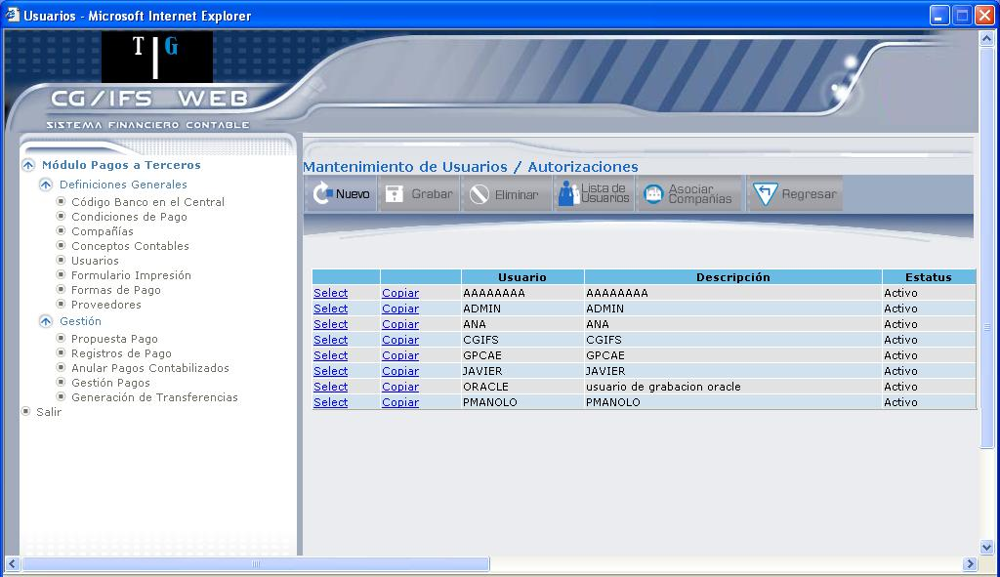
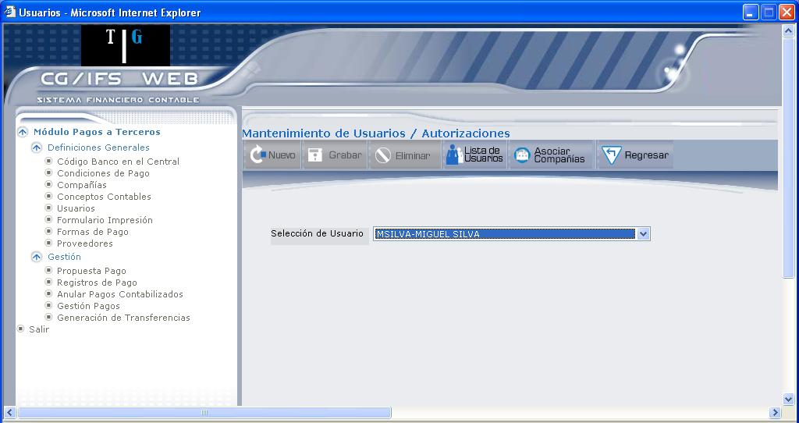
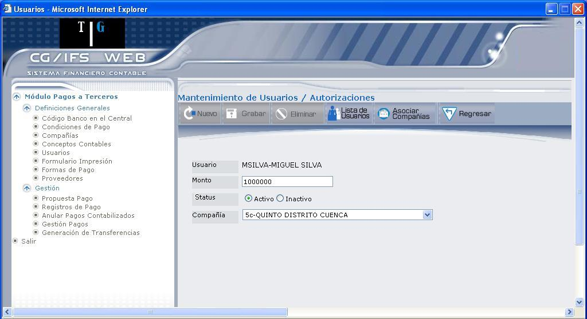
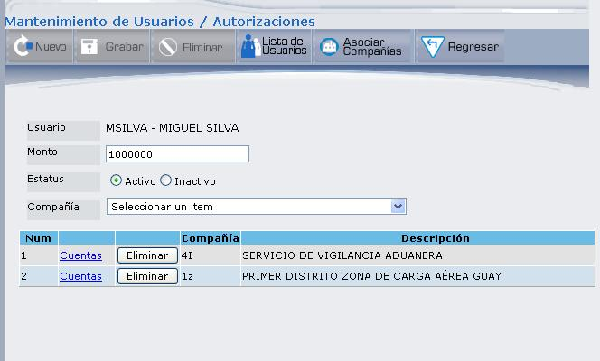
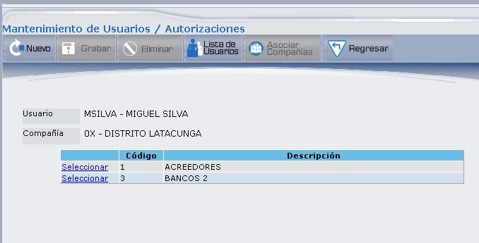
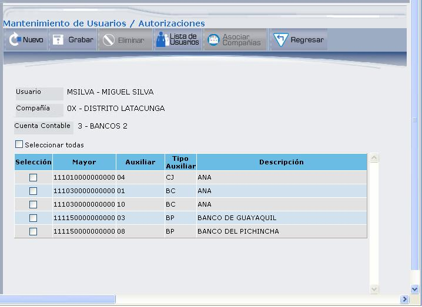
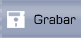
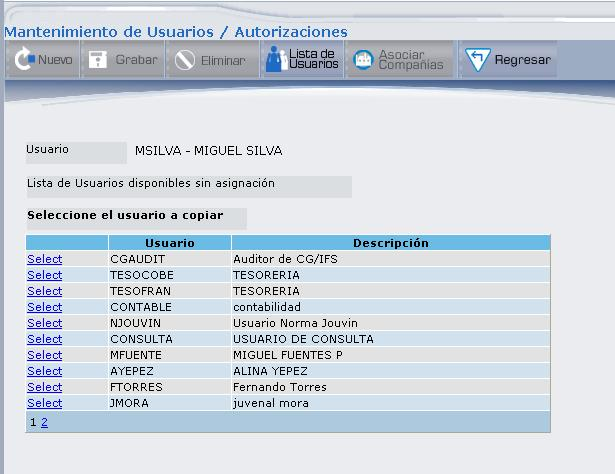

Usuarios
Permite realizar el mantenimiento de usuarios, asociar usuarios a compañías y dar las autorizaciones respectivas a los usuarios que van a usar el módulo generador de pagos. Al ingresar a esta opción se despliega la pantalla que muestra la Figura 3.24.
Es requisito indispensable que los usuarios ya estén registrados en el archivo de usuarios de CG. Con este programa no se pueden crear usuarios nuevos, lo que se hace es asignar las autorizaciones especiales para usar el módulo.

Figura 3. Mantenimiento de Usuarios.
El vínculo Select permite consultar información del usuario para actualizarlo o eliminarlo. Los campos y botones que se encuentren en la pantalla de consulta se definen en un nuevo registro de autorizaciones, que se explica en la Figura 3.25.
El vínculo Copiar permite copiar autorizaciones a usuarios sin asignación, esto se explica más adelante en la Figura 3.30.

Figura 3. Nueva Autorización.
Selección de Usuario:
Seleccione el usuario al cual se le darán autorizaciones, y presione el botón ASOCIAR COMPAÑÍAS. El usuario que seleccione no deberá tener ninguna asignación.

Figura 3. Nueva Autorización para asignación de compañías.
Usuario:
Corresponde al código y nombre del usuario.
Monto:
Permite poner un límite de pago, en donde el sistema validará que dicho pago no pase del monto indicado.
Status:
Por omisión, el estado del usuario es ACTIVO. Si desea desactivar marque el casillero INACTIVO.
Compañía:
Seleccione la compañía que desea asignar al usuario y presione el botón ASOCIAR COMPAÑÍAS. Si desea asociar una nueva compañía seleccione la compañía y vuelva a presionar el botón ASOCIAR COMPAÑÍAS. Según las compañías que vaya asociando se desplegará el listado de compañías como se muestra en la Figura 3.27.

Figura 3. Asociación de Compañías.
Como se puede observar en la Figura 3.27, se han asociado dos compañías; el usuario podrá consultar las cuentas contables asociadas a cada compañía y definir las cuentas de mayor, mediante el vínculo Cuentas. También podrá eliminar la compañía asociada al usuario, mediante el botón .
Al dar clic en el vínculo Cuentas se despliega lo siguiente: usuario, compañía y las cuentas contables asociadas a la compañía, como se muestra en la Figura 3.28.

Figura 3. Cuentas asociadas a la compañía.
Seleccione la cuenta contable en la que desea definir las cuentas de mayor, dando clic en el vínculo Seleccionar; se desplegará la pantalla que muestra la Figura 3.29.

Figura 3. Selección de cuenta contable para definir cuentas de mayor.
Las cuentas de mayor que se despliegan dependen de la cuenta contable que seleccione.
Marque el(los) casillero(s) de selección de las cuentas de mayor que desea asociar a la cuenta contable. El casillero “Seleccionar todas” marca todos los casilleros de las cuentas de mayor.
A continuación presione el botón GRABAR para registrar las cuentas de mayor seleccionadas.
BOTONES

COPIAR ASIGNACIONES A USUARIOS
Esto se lo puede realizar desde la pantalla de inicio, en donde debe seleccionar el usuario del cual desea copiar las autorizaciones, para ello debe dar clic en el vínculo Copiar, para desplegar la pantalla en donde se listan los usuarios sin asignación, como se muestra en la Figura 3.30.

Figura 3. Selección de usuarios a copiar autorizaciones.
La pantalla presenta el nombre del usuario de quien se van a copiar las autorizaciones. Seleccione el usuario destino dando clic en el vínculo Select, realiza la copia y presenta un mensaje de copia satisfactoria similar al siguiente: “Información del Usuario : MSILVA ha sido copiada al usuario : MFUENTE satisfactoriamente”.
Created with the Personal Edition of HelpNDoc: Full-featured EPub generator